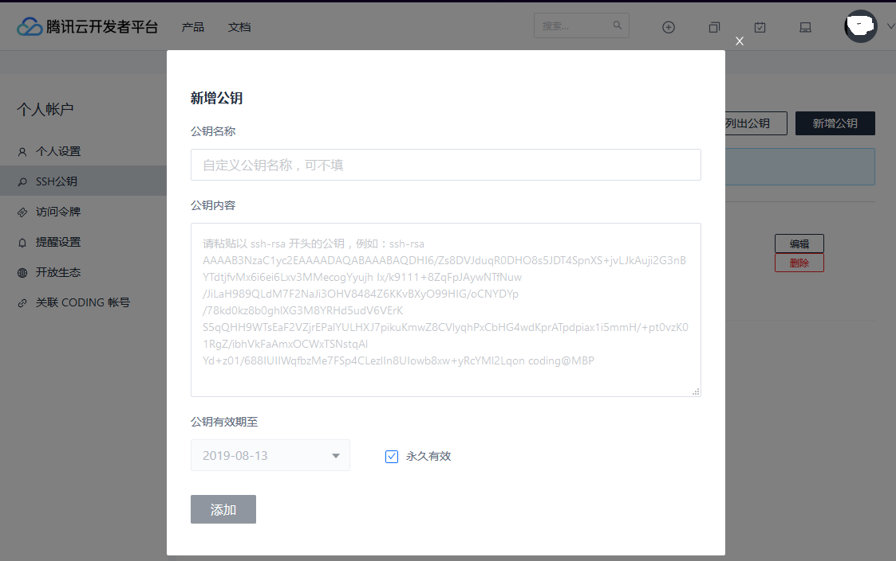
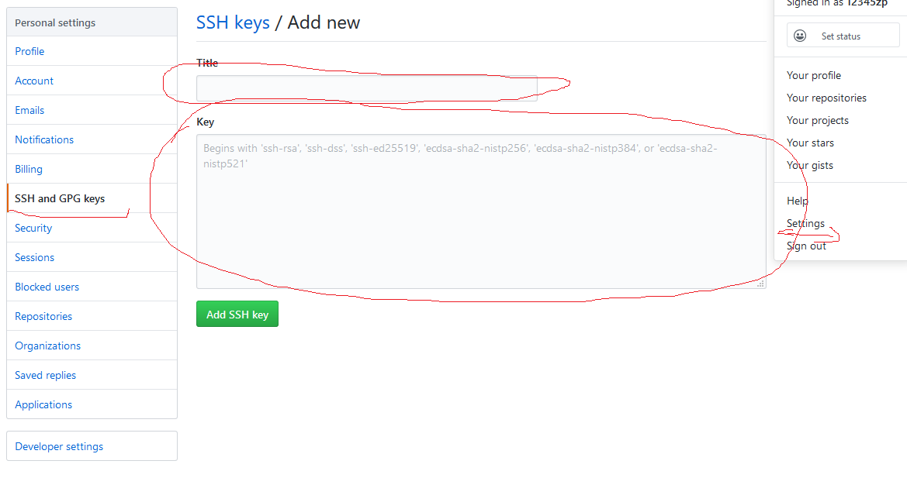

构建Hexo博客环境（github,coding)
前言
准备做一个技术博客，记录自己在开发中遇到的问题。看github的源码，发现很多技术类的文章都使用md文件格式，也注意到包括国内的csdn，国外的stackflow都支持markdown的格式，所以准备用markdown格式搭建博客。
感谢各个博客网站的文章，决定使用hexo框架来搭建环境。并且自己会有在多台电脑上编辑的习惯，所以构建多台可以同时编辑的博客环境。
hexo框架主要是用来生成共同的header，footer以及有友好的发布环境，博客的内容还是有markdown来书写。
主要的技术point如下：
构建步骤
1. 注册github，coding.net的账号
由于国内环境访问github速度较慢，所以在github发布的同时，在国内的腾讯云开发者平台（codding.net)上也同时发布博客。以下是构建两个环境的方法。
1.1 注册github及设置博客仓储
注册方法参照官网，去注册一个账号吧。Github
注册完后，添加一个公开的仓库。
- 名称必须是：github用户名.github.io
只有这样，将来要部署到GitHub page的时候，才会被识别，也就是通过自己的用户名.github.io去访问自己的博客。
1.2 注册腾讯云开发者平台及设置博客仓储和项目仓储
同理，在腾讯云开发者平台里添加一个公开的仓库。
- 名称必须是：用户名.coding.me
以后也可以通过 自己的用户名.coding.me来访问
1.3 任务小结
| 任务编号 | 任务名称 | 要求 | |
|---|---|---|---|
| task1 | 建立github账号并且添加博客仓库 | 仓库名称： github用户名.github.io | |
| task2 | 建立腾讯云账号并且添加博客仓库 | 仓库名称： 用户名.coding.me | |
| task3 | 在腾讯云里添加hexo的代码仓库（私有） | 仓库名称：hexo-source-backup |
2. 搭建hexo环境及选择主题
Hexo是基于nodeJs编写的，所以首先安装node.js
2.1 安装node.js
我用的是windows10，所以通过node.js站点下载安装了node.js
2.2 安装git
我用的是windows10，所以通过腾讯软件中心站点下载安装了git。 官网速度太慢，所以建议用以上链接下载
2.3 安装hexo
git和node.js安装好后，就可以开始安装hexo了，你首先创建一个blog的文件夹。选中文件夹后右键选择【Git Bash here】, 会跳出git的命令窗口。
输入命令
$ npm install -g hexo-cli
$ hexo -v$ ls -ltr
-rw-r--r-- 1 1049089 2206 5月 10 17:33 _config.yml
-rw-r--r-- 1 1049089 174 5月 13 17:13 db.json
drwxr-xr-x 1 1049089 0 5月 10 15:20 node_modules/
-rw-r--r-- 1 1049089 516 5月 10 14:55 package.json
-rw-r--r-- 1 1049089 165056 5月 10 14:55 package-lock.json
drwxr-xr-x 1 1049089 0 5月 13 16:58 public/
-rw-r--r-- 1 1049089 14 5月 13 15:36 README.md
drwxr-xr-x 1 1049089 0 5月 10 12:56 scaffolds/
drwxr-xr-x 1 1049089 0 5月 10 18:13 source/
drwxr-xr-x 1 1049089 0 5月 13 15:38 themes/
2.4 设置hero
主要设置_config.yml
….
title: BLOG
subtitle: Share my ideas with you！
description: *
keywords: **
author: USERNAME
language:
timezone:
…..
deploy:
type: git
repo:
github: https://github.com/xxxxx/xxxxx.github.io.git,master
coding: https://git.dev.tencent.com/xxxxxx/xxxxxx.coding.me.git,master
这个里面配置博客的名称以及发布环境的设置。 注意冒号后边必须有半角的空格。
2.5 任务小结
| 任务编号 | 任务名称 | 要求 |
|---|---|---|
| task4 | 安装node.js | - |
| task5 | 安装git | - |
| task6 | 安装hexo | - |
| task7 | 设置_config.yml | 设置发布信息到环境 |
3. hexo的发布
3.1 生成ssh key
首先创建ssh key用来访问发布的环境
$ ls -ltr ~/.ssh ## 确认没有内容
$ ssh-keygen -t rsa -C “youremail”
$ ls -ltr ~/.ssh
total 9
-rw-r–r– 1 username 1049089 1876 5月 10 13:39 id_rsa
-rw-r–r– 1 username 1049089 397 5月 10 13:39 id_rsa.pub
-rw-r–r– 1 username 1049089 817 5月 10 17:26 known_hosts
检查是否生成生成id_rsa, id_rsa.pub文件。
3.2 设置公开key到腾讯软件中心的git仓库
腾讯软件中心 -> 个人设置 -> 新增公钥按钮点击

- 公钥名称：任意
- 公钥内容：id_rsa.pub的内容复制粘贴到这里
点击【添加】按钮完成设置
3.3 设置公开key到腾讯软件中心的git仓库
Github -> 个人设置settings -> SSH and GPG keys -> Add SSH key 点击

- Title：任意
- key：id_rsa.pub的内容复制粘贴到这里
点击【添加】按钮完成设置
3.4 任务小结
| 任务编号 | 任务名称 | 要求 |
|---|---|---|
| task8 | 生成ssh key | - |
| task9 | ssh的公钥设置到腾讯云开发中心 | - |
| task10 | ssh的公钥设置到github | - |
4. 构建多台电脑发布的环境
TODO.
参考
参考
- 搭建多语言的环境
- 知识点封层管理
- 追加评论功能
- 追加网站数据访问分析功能
最后
关注我的博客：